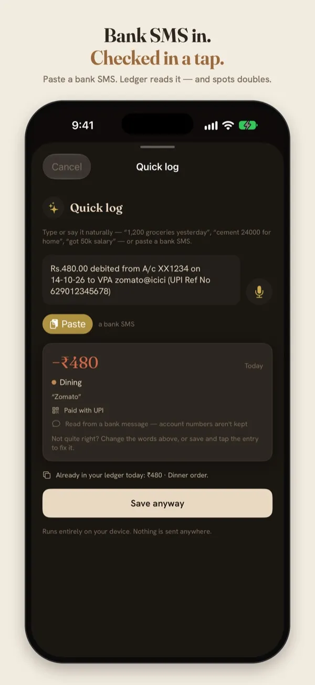

How to log bank SMS automatically on iPhone
Every UPI or card payment in India sends you a bank SMS. On Android, expense apps read those messages from your inbox. On iPhone they can't, and that's on purpose. Here's what does work, step by step.
Why iPhone apps can't read your SMS
iOS doesn't let any app read your Messages inbox. It's one of the reasons an iPhone is private: no app, however useful, can quietly look through your OTPs and bank alerts.
So on iPhone there are two honest ways to turn a bank SMS into an expense:
- Paste it. Copy the message and paste it into the app, which reads it.
- Automate it with Shortcuts. Apple's Shortcuts app can watch for messages that contain certain words and hand just those messages to an app as they arrive. The app still never sees your inbox.
What's in a bank SMS
A typical UPI debit message looks like this:
It has everything an expense needs: the amount, who you paid, and the date. The wording changes from bank to bank. Some say debited, some say sent, card alerts often say spent, and money in says credited. That matters for the automation below.
The SMS comes from your bank, not from the UPI app, so it doesn't matter whether you paid with GPay, PhonePe, Paytm or your bank's own app. If your bank sends an SMS for the payment, it works.
Way 1: paste a message (any iPhone)
- In Messages, press and hold the bank SMS, then tap Copy.
- In Ledger, open Quick log (the ✦ button) and tap Paste.
- Check what Ledger read (amount, merchant, date and category), then Save entry.

Sample data. Ledger reads the SMS on the phone, and points out when the same amount is already in your ledger that day.
Way 2: log every bank SMS automatically
This takes about two minutes, once. You'll need Ledger installed (it runs on iOS 17 or later).
- Open the Shortcuts app → Automation → New Automation → Message.
- Set Message Contains to debited. Add filters for sent, spent and credited, and choose Any, so every bank's wording is caught. Choose Run Immediately.
- Add the action Log a bank message (Ledger), and set its Message to Shortcut Input → Content.
- That's it. From now on, each matching message is logged as it arrives.
Messages that aren't payments, like an OTP, a balance alert or an offer, are ignored, even if they contain one of those words. The same message is never logged twice. New entries wait in To review on Ledger's Now screen, so you can glance over each one.
On iOS 27, Ledger can add a ready-made shortcut for you: Settings → Bank messages → Set up automatic logging. If your bank's messages say “sent” or “spent” rather than “debited”, add those words as in step 2.
Which banks it reads
Ledger's reader is tested on messages from HDFC, ICICI, SBI and Kotak, including the “Sent Rs…” style. Most other Indian banks use the same kind of wording. If a message isn't read right, you can correct the entry in To review, or paste the message into Quick log and fix it before saving.
What stays private
- iOS hands Ledger only the text of messages that match your automation. Ledger never reads your inbox.
- Account and card numbers in the message are never kept.
- Reading happens on your iPhone, and nothing is sent anywhere. Ledger has no account and no ads.
Log bank SMS with Ledger
Free on the App Store, for iPhone with iOS 17 or later.
Questions
Will this log OTPs or promotional messages?
No. Only messages that read as a payment become entries. An OTP, a balance or an offer is ignored.
What if I already typed the expense in myself?
Ledger notices the same amount on the same day and flags the new entry in To review, so you can check it.
Does the automation need the internet?
No. Shortcuts runs on the phone, and so does Ledger's reader.